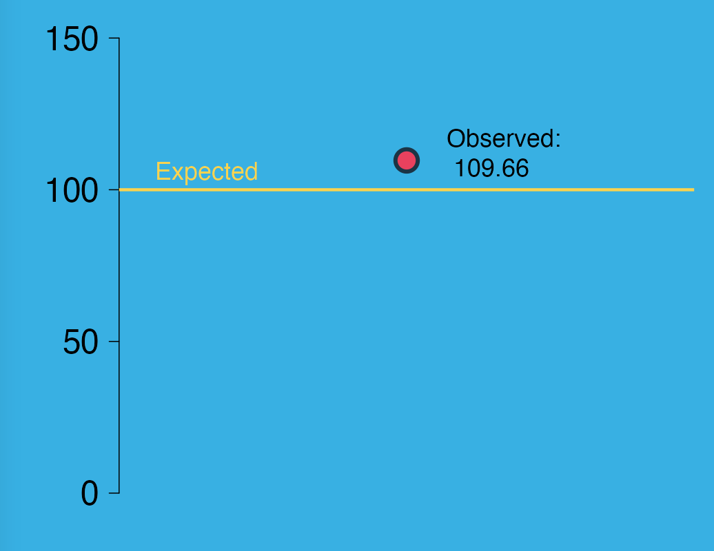
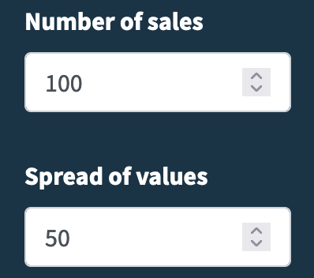
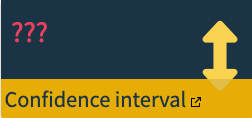

| Average sale | Observed | P value | CDF | |
|---|---|---|---|---|
| Below | . | . | _ | - |
| . | . | _ | - | |
| . | . | _ | - | |
| Above | . | . | _ | - |
| . | . | _ | - | |
| . | . | _ | - |

Engaging With Uncertainty
Introduction
Often when faced with a decision the best choice is unclear. Nowadays it is de rigueur to claim that all decisions are evidence-based, or data-driven. But even when this is as true as it can possibly be, it is often still uncertain what the best course of action will be. Using a simplistic scenario based approach this activity is intended to bring to the surface the types of issues that arise in an uncertain system. Using an interactive simulation we can get an idea of how data can vary, and how we can learn to be comfortable with uncertainty by reframing problems and recognizing that our data allow us to moderate our expectations.
The activity is split into two parts. The first part focuses on developing an understanding of how data quality affects our understanding of our system.
By the end of the activity we should start to see the importance of engaging with uncertainty, through our discussions, begin to see possibilities for going beyond just engaging, to actively embracing uncertainty.
At several points during the activity you will be asked to take a record of thoughts, ideas and questions surfaced by your group, as well as some of the values output by the app. Please write anything that occurs down because some of these will be referred to at later points int the activity. You can choose whether to keep your own notes or to nominate a scribe for the group.
Scenario
Consider a situation where a business has an average weekly sales value of exactly £100. This figure is the average over the entire history of the business, and is known to be exactly correct.
The Boss of this business wants to increase the average sale, so decides to implement a new marketing campaign designed to more effectively target a different subset of its customers - hopefully ones that spend more money.
In the first week following the new marketing campaign they find their average sale rose to £109.66. Higher indeed than the expected average of £100.

Boss congratulates the team, and declares their new marketing strategy a success.
Was Boss right to do so?
Part 1 — How can we be sure?
We are going to explore how different possible answers to those questions might affect how we come to a decision.
Average expectation

Figure 2 above shows a horizontal gold line at £100. This indicates the all-time historic average for our company. For the purposes of this exercise, we shall consider this an unambiguous “truth” of what our business has made in an average week. It is therefore not a statistic, since statistics are values that are used to estimate “true” parameters.
Looking at this we see that the recent sample yielded an average value higher than the historic average.
Now that you have created a list follow this link. The plot on the left is the same as that in Figure 2, but with a different “observed” value. The value you see will be unique to your team, and is the result that you will be considering. If it is above expectation, the Boss will be happy, if not, they won’t! For our purposes, we will assume a change of at least 1 percentage point to be an outcome that has real importance for our business. It is your job to decide whether the marketing campaign was a success or a failure, and choose to either agree or disagree with the Boss.
Now create a table with a column called n = 5 (we will add a few more columns as we go). You can create your table on paper or using a desktop app. Record your value in your table. Please keep an easily referenced
Now… unbeknownst to the Boss we have been granted superhero like powers that allow us to explore different realities. We have the ability to simulate what the observed value might be like in some of these other realities, by pressing the button. Press it several times, and, after each press, record the new observed value. You should see that the observed value changes - possibly by quite a lot! Notice also that the two graphs on the right respond to any changes—more about these later.
There are several controls in the left sidebar that we can experiment with to help understand some of the factors that influence the value, and possibly indicate how much faith we should have in our results. There are quite a few controls, so lets explore them one at a time.
Sample size
The first control we will look at on the left is labeled “Number of sales”. It is currently set at 5, and indicates that five sales were made during the week. You have just seen how the observed value changes, sometimes quite dramatically, week to week.
Let’s have a look at the individual sales, tick the “Show sales” box.
The small red points that appeared on the plot show the values of each of the sales made. It might now be clearer that the large red point labelled “Observed value” actually represents the mean of all the sales. Press the button several more times.
In your table, create a new column with the header n = 20 . Now change the “Number of sales” input to 20, and try several new samples (press ). Record each of the new values in your table.
At this point the Boss tracks you down, and wants confirmation that they were correct. What can you tell them?
- Has the marketing campaign affected the customer base?
- In what direction—are they spending more or less than before?
- If the previous average was £100, what is your best guess at the new average?
- Write down what you think the new average sale is.
Precision
The Boss was somewhat impressed by your investigative skills, and is almost content to take your word for it. However, they realize that the average sale will vary week to week. They want you to give a best guess that somehow accounts for this variation.
Hopefully we were able to see, and articulate in our teams, how more sales affected our average sales value. However, just having more sales might not be enough to allow us to come to a decision. If you carried out the last instruction in the box above, you show have number of sales set to 100. The input below that is called “Spread of values”. Change this input to 50, hit a few more times. Hmm, things just got unpredictable again, right?
The width of the range of values has an important effect on our average sale value. Suppose everything we sold cost £100. With 5 sales, we could be 100% certain of what our average sales would be £100.
Ok, time for a slight confession—I’m afraid the task above was a little bit of a mean trick! To be fair, though, there was a clue in the section header. See, given a large enough number of sales, all three businesses could create similarly accurate projections. This what the mean does. while the estimate may jump about wildly when the sample size (number of sales) is small, it does so around the actual true mean. Where the businesses would differ is in the precision of their projections. In order to increase our precision we have to reduce the range within which the estimate jumps around.
The current input settings should be as show on the right, top. To get a better understanding of how the “spread” relates to the precision, check the “Show margin of error” box (right, bottom). This will make a few changes. First you will notice there are now error bars extending form the red point on the plot. One other thing that has changed is the box under the plot labelled “Confidence interval” now show the range of the margin of error (MoE).



We can now see that while the sample size help us guess what the average is, but how much future weeks deviate from our guess depends on the spread, or the variation in our sales values.
The next time the Boss comes calling we can now give an average and a likely upper and lower limit for our estimate. “That’s great,” says Boss, “But what do you mean by likely limits?”
What we have been tip-toeing around is the concept of a confidence interval (CI). The language for dealing with these is a bit statsy and confusing, so we’ll work try and set some expectations first which we will then try and test to confirm or refute.
So far we have been dealing with a 95%. Go ahead ahead now and change the selection.

Watch what happens to the error bars as you do this. Compare the changes to the notes you took in your previous discussion. Was your expectation correct? If not try and explain why.
Now here comes the hard stuff. It is a very common misunderstanding that a 95% confidence interval means that there is a 95% chance that the true value is within the CI. So lets break it down.
- What do we mean by “true value”?
- In our case, the true value is the actual average sale for our customer base
- We don’t know what that is, that is why we are guessing.
- But every week, our CI is slightly different, so that proves the misunderstanding is false.
- For several different CIs to all have a 95% chance of containing the true value doesn’t make sense
- If we turn that idea upside down and instead say…
- Of the CIs we compute for the next \(X\) weeks, 95% of them will cover the true mean.
Hmmm, what does that actually mean? Well for one thing, it means even if we have everything in place exactly as we would like, we might still be wrong.
The more important question is how can we use this concept? Remember our question is to investigate whether our marketing campaign has caused a shift in out customer base. If we can show, within some level of confidence, that our new customer base spends a different amount on average than our old customer base, then we can conclude that our marketing campaign did cause a shift.
So, based on our new sample we have an estimate of our customer’s spends. And we have some margin of error around that mean. Now, here’s the clever bit.
- If that CI covers the expected average of the old customer base,
- That means that the old average could be the true mean for the new base.
- And, if that is true, we are forced to admit that there is no evidence that the customer base has been influenced by any meaningful amount.
- Conversely, if the CI does not cover the old average…
It suggests that the new average is sufficiently far from the old average
And that the spread of the data is accounted for well enough that we have evidence that the new customers are indeed from a different group than the old customers.
Whew! That’s quite a lot to chew on. And Boss, want more!
Part 2 — But does it matter?
The Boss is fair impressed with their new understanding of these concepts, but wants some extra assurance that this is not just some fluke week. To this effect, Boss has heard tell of a magic number that “just tells you” if the new customers are different from the old.
This magical number is displayed under the plot, to the left of the CI box. This number is closely related to the confidence interval, and is similarly burdened with some heinously (but necessarily) obtuse language. This is a metric that asks if the customer base had not changed, how unusual would the data obtained from the new customer base be?
The more weird the data is, the more different the new average will be from the old average, and the smaller this magic number is. It works on pass/fail basis based on a hard threshold. Without delving any more deeply into the stats, we can say that this threshold is determined in the same way as the CI. Each margin of error is associated with a probability, which
- If we choose an MoE of 90%, that correspond to a probability of 0.9, which gives a threshold of 0.1
MoE of 95% corresponds to a probability of 0.95, and give a threshold of 0.05
MoE of 99% corresponds to a probability of 0.99, and give a threshold of 0.01
The p-value is a useful metric, but the importance of it is easily and often overstated. We are going to try and understand it in the context of these other two graphs: the cumulative distribution function (CDF) and the probability density function (PDF).
The CDF
Unlike many things in statistics (p value? confidence interval?) the CDF is perhaps less complicated than might be expected. To explore it we shall make another table from our data.
Hopefully, there is some hint of a relationship between the p-value and the CDF curve. But what does it mean? The \(y\) axis ranges from 0 to 1. These values are probabilities (it is impossible to have a probability outwith those bonds). The value on the \(y\) axis corresponding to the point is straight forward. But what about the \(x\) axis? (If you cant find it, it is shared with the PDF, and is printed at the bottom of the bottom graph.) What does it represent? The \(x\) axis has been converted to a standardized scale. A bit like when e.g. country statistics are standardized to be understood in a per capita context. In this case the \(x\) axis represents the distance of the new, observed, value from the old, expected, value. Thus \(x = 0\) represents no difference between them.
Notice that when \(x = 0\), \(y = 0.5\). This tells us that of all the values it is possible for the observation, 0.5, or 50% of them are less than the expected value. So what about wherever your point is? Follow the point down to the \(x\) axis, and this is how far your observed value deviates from the expected value, in these, aforementioned, standardized units. The corresponding value on the \(y\) axis is the probability of obtaining the current value, or any value even further to the left—a value that is more extreme in how far it deviates from the expected value.
The PDF
The second curve on the right is slightly more difficult to grapple with just because the values on the \(y\) axis are less intuitive; they are no longer probabilities. At least the \(x\) axis hasn’t changed. It is still in those same standardized units of how far the observation deviates from the expected average (you might call it a scale of standard deviations).
However, as for the \(y\) axis units, those are densities (?!?) but thankfully we do not need to go any deeper into that for our purposes. The plot itself has to be understood in the context of the area under the entire curve. It can still be interpreted in a similar way to the CDF. However, instead of adding up all the values further to the left we consider the area under two points. If those two points are so close together, that we can’t really distinguish them, then that is close enough for us to consider the area under a single observed point.
It turns out that if our two points happen to be at \(\pm1\) standard deviation, then the area of the curve within that range is about 68% of the total area under the entire curve. Even more interesting is that 95% of the total area under the curve is between \(\pm2\) standard deviations.
One final point to bring us back around, full circle. Pay close attention to the shape of the PDF curve, and change the sample size between, say 5, 10, 20 and 50. We should notice two things. Firstly, the shape of the curve changes, and secondly the position of the yellow CI lines move.
The Boss want some answers
Boss rocks up one final time. They want some definitive answers to the following questions:
- Did the marketing campaign succeeded in bringing in a different customer base?
- If so, would we class it as a success?
- What is your best estimate for the new average sale for the new customer base?
- You might want to consider some nuance here.
- Do you really want to put your neck on the line by giving a single estimated value?
- The Boss wants to try a new marketing campaign.
- Hit the {width=“122” height=“40” alt=’New campaign”} button at the top of the menu bar to target a different customer base, and start again!
Conclusion
TODO:
- Review these outcomes.
- Are they realistic?
- Get a second opinion or two
- Check consistency of terms
- profit vs sales vs something else
- expected values / observed value / old value / new value etc
- Check consistency of aesthetics eg callouts
- explored effects of sample size
- explored effects of variance
- developed an understanding of CIs
- developed an awareness that different levels of confidence bring certain trade-offs
- explored how to tell if a sample belongs to the same population or a different one.
- begun to develop an awareness of distribution functions
- begun to understand how distribution function relate to a business question
- and how they can be used to inform business decisions
- Wrap up with comment that uncertainty happens.
If we ignore it, we’ll get bitten.
If we engage with it we can learn more about the processes of importance to us
- and incorporate the new understanding in our decision making processes
If we embrace it, we can create different strategies for when variance bites hard
If we embrace it better than our competitors, we can create options more quickly than they can
Or some such ¯_(ツ)_/¯
Other thoughts
- Maybe needs an intro?
- Can just do that at the start of the session?
- crib sheet
- Since there are no answers in this doc, and several important concepts are not mentioned explicitly in this doc, an instructor crib sheet might be handy to help guide participants discussions.
- Maybe number the tasks for easy reference with crib sheet
- More images of plots when explaining?
- to show different levels of sig
- successful / failed campaigns?